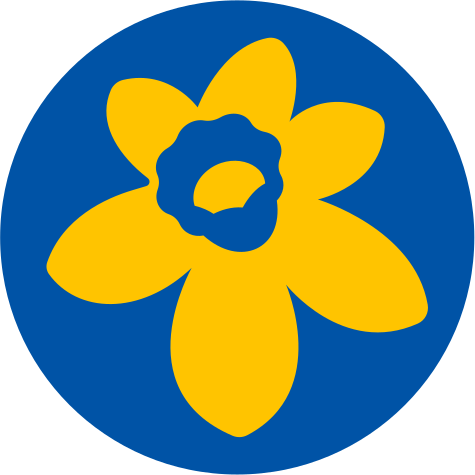

©2024 Marie Curie. Registered Charity, England and Wales (207994), Scotland (SC038731). Registered company limited by guarantee, England & Wales (507597). Registered Office: One Embassy Gardens, 8 Viaduct Gardens, London SW11 7BW